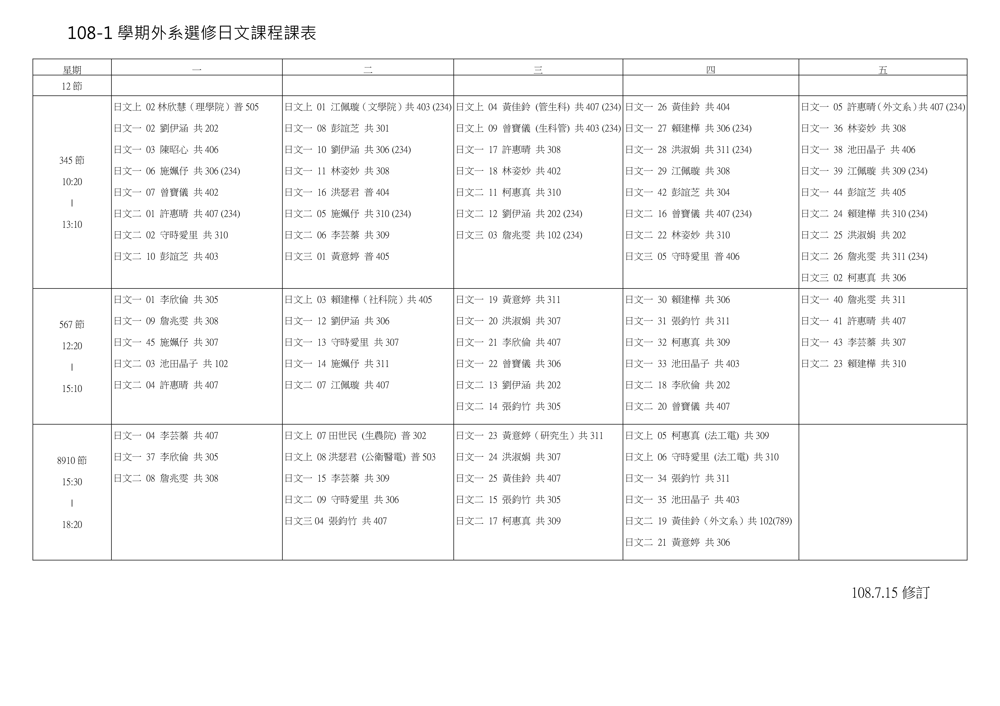

Japanese Learning
Generally speaking, most of Japanese people are poor at speaking English. Accordingly, getting good command of japanese language will be useful when traveling to Japan, the beautiful country with fascinating oriental culure.
Speaking Japanese is NOT difficult. Practice makes perfect. There are some websites for learning Japanese below.
Recommended Website for Japanese Language Language
1. NHK Easy News
NHK is the most prestigious press in Japan. NHK use easy japanese vocabulary which is especially suitable for new Japanese language learners
2. Leaning Resource from Department of Japanese Language and Literature (DJLL) at National Taiwan University (NTU)
There is Vocabulary tables for Japanese learners. More details are below
3. Eating Teacher's Japanese Fan Page
Her Fan Page is informative and amusing. Worth following
Japanese Course in National Taiwan Univeristy, NTU
2019-1 Course Table
Information from : DJLL, NTU
{kind=link}
File Download
1. 2019-1 Course Table Download
2. Vocabulary File Download
日文一／日文上下單字表（第1-20課）
日文二單字表（第13-40課）